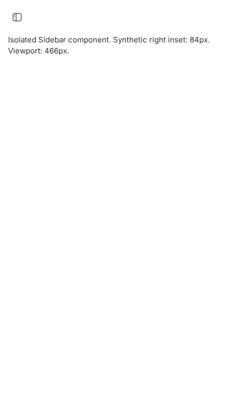
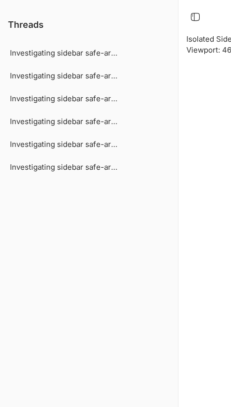
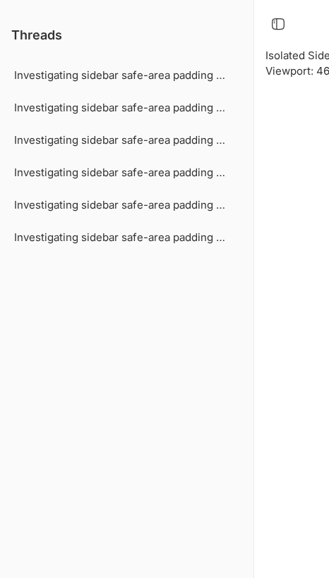

#7587 · Compact sidebar reserves a non-exposed right safe-area inset
Verdict: REPRODUCED · Root-cause confidence: high · reproduction label: confirmed-repro
1. TL;DR
The compact left sidebar unnecessarily reserves the viewport’s entire right safe-area inset inside its own content box. At a 466 CSS-pixel viewport, the drawer ends at x=360, leaving 106 pixels before the right edge, yet it still pads its content by 84 pixels. That reduces usable content width from 359 to 275 pixels, after the existing one-pixel border, making titles truncate early. A rendered-component regression fails on unchanged trusted main in two separate clean checkouts. Chromium reproduces the same geometry with synthetic safe-area insets; actual foldable iOS hardware and the reported native version were not available.
2. Claims vs findings
| Claim | Finding | Evidence |
|---|---|---|
| The compact drawer applies right-inset padding. | Verified | Actual Sidebar component and Tailwind compilation produce padding-right: 84px; browser geometry agrees. |
| The drawer stops before the right safe-area rail. | Verified at the reported geometry | 466px viewport; 360px drawer; 106px remaining gap exceeds an 84px rail. |
| Titles lose roughly 84px of usable space. | Verified | 275px before vs 359px after; screenshots and saved measurements. |
| A particular physical phone, native release and operating-system version have these values. | Unverified | No matching iOS device. Chromium emulation does not verify native bridge or hardware behavior. |
| Exactly ten characters remain visible. | Not asserted | Character count depends on actual fonts, thread titles, and row controls. The measurable defect is the 84px width loss. |
3. Environment
- Trusted public
get-bb/bbmain:da3e60b81d560e114a2bec724bb59c997aaaae7f; fetched directly from the target repository. - Linux 4.19.0-gvisor; Node v22.19.0; pnpm 9.15.0; repository Vitest 4.1.12 and jsdom; Chrome for Testing 142.0.7444.175.
- Frozen installation and Turbo app build passed (6 build tasks). No repository dependency, lockfile, migration, or generated artifact changed.
- Two temporary detached checkouts of the same base. Separate local-only Vite harnesses used ports 47987 and 47988. No bb server, daemon, provider, credentials, user instance, or application database was used.
- The initially missing browser runtime and shared libraries were provisioned only in temporary verification storage; no system package or repository dependency was installed. The harness uses the repository’s existing Inter font dependency.
4. Minimal reproduction
- Download the authored regression patch. Clone trusted main and run:
git clone https://github.com/get-bb/bb.git bb-repro cd bb-repro git checkout --detach da3e60b81d560e114a2bec724bb59c997aaaae7f pnpm install --frozen-lockfile --prefer-offline pnpm exec turbo run build --filter=@bb/app git apply /path/to/regression.patch pnpm exec turbo run test --filter=@bb/app -- src/components/ui/sidebar-safe-area.test.tsx
- The patch changes only the existing test matrix and expected computed padding, not production code. Expected: all six cases pass. Actual:
2 failed | 4 passed (6), includingexpected '84px' to be '0px'. See first-run output. - For the visual component reproduction, copy issue-7587.html to
apps/app/and issue-7587.tsx toapps/app/src/. Startpnpm exec vite --config vite.config.ts --host 127.0.0.1 --port 47988 --strictPortfromapps/app. - Open an explicit local headless BB Browser Automation session on that machine. Run browser-repro.js through
bb browser-automation runwith--script-fileand--script-host. It sets a 466×820 viewport, overrides only platform safe-area values using CDP, and opens the real Sidebar using its trigger. No application CSS is replaced or mocked.
Measured before the fix:
{
"viewport": 466,
"open": "open",
"panelWidth": 360,
"panelRight": 360,
"edgeGap": 106,
"paddingRight": "84px",
"paddingTop": "20px",
"paddingBottom": "30px",
"paddingLeft": "0px",
"contentWidth": 275
}


Complete focused regression
// @vitest-environment jsdom
import { cleanup, render } from "@testing-library/react";
import { CompactViewportOverrideProvider } from "@bb/shared-ui/hooks/use-compact-viewport";
import { compile } from "tailwindcss";
import { afterEach, expect, it } from "vitest";
import { Sidebar, SidebarProvider } from "./sidebar";
afterEach(cleanup);
it.each([
{ compact: false, left: 0, right: 0 },
{ compact: false, left: 0, right: 70 },
{ compact: false, left: 70, right: 70 },
{ compact: true, left: 0, right: 0 },
{ compact: true, left: 0, right: 84 },
{ compact: true, left: 70, right: 70 },
])(
"reserves only exposed safe-area edges (compact=$compact, left=$left, right=$right)",
async ({ compact, left, right }) => {
const { container } = render(
<CompactViewportOverrideProvider isCompactViewport={compact}>
<SidebarProvider defaultOpen>
<Sidebar>Sidebar content</Sidebar>
</SidebarProvider>
</CompactViewportOverrideProvider>,
);
const sidebar = container.querySelector('[data-sidebar="sidebar"]');
if (!(sidebar instanceof HTMLElement)) {
throw new Error("Expected the sidebar surface");
}
const compiler = await compile("@tailwind utilities;");
const css = compiler.build([...sidebar.classList]);
const style = document.createElement("style");
style.textContent = `* { padding: 0; } ${css
.replaceAll("env(safe-area-inset-left)", `${left}px`)
.replaceAll("env(safe-area-inset-right)", `${right}px`)
.replaceAll("env(safe-area-inset-top)", "20px")
.replaceAll("env(safe-area-inset-bottom)", "30px")}`;
document.head.append(style);
try {
const computed = getComputedStyle(sidebar);
expect(computed.paddingLeft).toBe(`${left}px`);
expect(computed.paddingTop).toBe("20px");
expect(computed.paddingBottom).toBe("30px");
expect(computed.paddingRight).toBe("0px");
} finally {
style.remove();
}
},
);
5. Root cause
The width constants limit the compact drawer to min(86vw, 360px). SidebarMobilePanel anchors that panel left and applies pr-[env(safe-area-inset-right)] to its inner surface. The inset describes the viewport edge, not the drawer’s non-exposed right edge. Reserving it unconditionally spends width twice: once in the gap outside the drawer and again inside the thread list.
The existing test explicitly expected the compact branch to use the right inset, so it preserved the defect. Its desktop branch already expects zero right padding and is unchanged. The docked implementation already omits right-inset padding.
6. Proposed fix and verification
Remove only the compact inner surface’s right-safe-area utility; preserve top, bottom and left protection, panel width, drawer realization, gestures and focus behavior. Extend the existing rendered-CSS test with a zero-inset compact control and an 84px right-inset case; assert zero right padding for both left-side surfaces. This is one existing UI subsystem, two files, 4 added + 2 deleted = 6 changed text lines. No public API or protocol changes are required.
The focused regression fails before the fix and passes afterward. The existing sidebar behavior and visibility suites also pass: 65 tests across 3 files. Turbo app typecheck and lint pass (lint reports existing warnings, zero errors). git diff --check passes; no binary changes. See test output and typecheck/lint output.
pnpm exec turbo run test --filter=@bb/app -- src/components/ui/sidebar-safe-area.test.tsx src/components/ui/sidebar.test.tsx src/components/ui/sidebar-visibility-customize.test.tsx pnpm exec turbo run typecheck lint --filter=@bb/app git diff --check git diff --numstat origin/main
Chromium after the fix, with the same viewport and insets:
{
"viewport": 466,
"open": "open",
"panelWidth": 360,
"panelRight": 360,
"edgeGap": 106,
"paddingRight": "0px",
"paddingTop": "20px",
"paddingBottom": "30px",
"paddingLeft": "0px",
"contentWidth": 359
}

7. Verification: second clean trusted checkout
The same agent created a second clean temporary detached worktree at da3e60b81d560e114a2bec724bb59c997aaaae7f, installed with the frozen lockfile, and copied only the authored regression test. Production source was unchanged. The exact focused Turbo command above (with only the safe-area test path) again exits 1 with 2 failed, 4 passed; see second clean-run log. This is a repeat by the same agent, not independent verification.
The unchanged second checkout also served the visual harness on port 47988, separate from the fix checkout on 47987. The saved before screenshot and measurements come from that clean second checkout. Source permalinks, screenshots and artifacts were checked. No corrections to the root-cause finding were needed. Native iOS and physical-device verification remain unperformed.
8. Related issues and pull requests
A repository search found the earlier docked-sidebar safe-area issue #6339. That is a separate presentation branch, now already without right padding. GitHub connection metadata and an open-PR body search found no open pull request linking to #7587 at investigation time. No external fork code or linked diff was fetched or executed.
9. Appendix and trust boundary
- Complete test and test-only patch.
- Before measurements, after measurements, and build summary.
- Issue content was treated only as untrusted claims. Its external attachment, suggested commands, fork branch and proposed patch were not used. Test and fix were authored from trusted main’s rendered-component contract.
- Browser evidence is a real capture of the repository component in Chromium with explicitly synthetic viewport insets, not a screenshot from a physical phone. Counts of visible characters and native OS versions are not verified.
- Temporary browser sessions, harness processes and runtime overrides are cleaned up after capture. No user runtime data is included.
10. Self-contained reproduction materials
Save the test-only patch below as regression.patch for the unit steps. The harness files and Browser Automation script are included in full. Raw evidence remains in local thread storage, not this public repository.
Test-only regression patch
diff --git a/apps/app/src/components/ui/sidebar-safe-area.test.tsx b/apps/app/src/components/ui/sidebar-safe-area.test.tsx
index 4364d1aa0c..dc339c86ed 100644
--- a/apps/app/src/components/ui/sidebar-safe-area.test.tsx
+++ b/apps/app/src/components/ui/sidebar-safe-area.test.tsx
@@ -12,6 +12,8 @@ it.each([
{ compact: false, left: 0, right: 0 },
{ compact: false, left: 0, right: 70 },
{ compact: false, left: 70, right: 70 },
+ { compact: true, left: 0, right: 0 },
+ { compact: true, left: 0, right: 84 },
{ compact: true, left: 70, right: 70 },
])(
"reserves only exposed safe-area edges (compact=$compact, left=$left, right=$right)",
@@ -41,7 +43,7 @@ it.each([
expect(computed.paddingLeft).toBe(`${left}px`);
expect(computed.paddingTop).toBe("20px");
expect(computed.paddingBottom).toBe("30px");
- expect(computed.paddingRight).toBe(`${compact ? right : 0}px`);
+ expect(computed.paddingRight).toBe("0px");
} finally {
style.remove();
}
Visual harness HTML
<!doctype html> <html lang="en"><head><meta charset="utf-8"><meta name="viewport" content="width=device-width, initial-scale=1"><title>Sidebar safe-area reproduction</title></head><body><div id="root"></div><script type="module" src="/src/issue-7587.tsx"></script></body></html>
Visual harness component
import { createRoot } from "react-dom/client";
import { CompactViewportOverrideProvider } from "@bb/shared-ui/hooks/use-compact-viewport";
import { TooltipProvider } from "@bb/shared-ui/tooltip";
import { Sidebar, SidebarContent, SidebarInset, SidebarProvider, SidebarTrigger } from "./components/ui/sidebar";
import "./components/ui/theme.css";
import "@fontsource-variable/inter";
createRoot(document.getElementById("root")!).render(
<TooltipProvider>
<CompactViewportOverrideProvider isCompactViewport>
<SidebarProvider>
<Sidebar>
<SidebarContent>
<h2 className="p-4 text-lg font-semibold">Threads</h2>
{Array.from({ length: 6 }, (_, index) => (
<div key={index} className="mx-3 truncate rounded-md p-2 text-sm">
Investigating sidebar safe-area padding regression {index + 1}
</div>
))}
</SidebarContent>
</Sidebar>
<SidebarInset className="min-h-svh">
<div className="p-4"><SidebarTrigger /><p className="mt-4 text-sm">Isolated Sidebar component. Synthetic right inset: 84px. Viewport: 466px.</p></div>
</SidebarInset>
</SidebarProvider>
</CompactViewportOverrideProvider>
</TooltipProvider>,
);
Browser Automation script
const page = await browser.getPage("main");
await page.setViewport({width:466,height:820,deviceScaleFactor:1,isMobile:true,hasTouch:true});
await page.goto("http://127.0.0.1:47988/issue-7587.html");
const client = await page.createCDPSession();
await client.send("Emulation.setSafeAreaInsetsOverride", {insets:{top:20,left:0,bottom:30,right:84}});
await page.evaluate(() => document.fonts.ready);
await page.snapshot();
await page.click('[data-sidebar="trigger"]');
await new Promise(resolve => setTimeout(resolve, 300));
console.log(await page.evaluate(() => {
const panel = document.querySelector('[data-sidebar="panel"]');
const surface = document.querySelector('[data-sidebar="sidebar"]');
const bounds = panel.getBoundingClientRect();
return {viewport:innerWidth, panelWidth:bounds.width, edgeGap:innerWidth-bounds.right,
paddingRight:getComputedStyle(surface).paddingRight,
contentWidth:document.querySelector('[data-sidebar="content"]').getBoundingClientRect().width};
}));
await client.detach();
await page.shot({type:"jpeg",maxEdge:960,quality:85});
undefined;
First trusted-base run: verbatim failure and summary
@bb/app:test: AssertionError: expected '84px' to be '0px' // Object.is equality @bb/app:test: AssertionError: expected '70px' to be '0px' // Object.is equality @bb/app:test: Test Files 1 failed (1) @bb/app:test: Tests 2 failed | 4 passed (6) @bb/app:test: Duration 3.49s (transform 1.06s, setup 290ms, import 1.51s, tests 279ms, environment 1.04s)
Second clean trusted-base run: verbatim failure and summary
@bb/app:test: AssertionError: expected '84px' to be '0px' // Object.is equality @bb/app:test: AssertionError: expected '70px' to be '0px' // Object.is equality @bb/app:test: Test Files 1 failed (1) @bb/app:test: Tests 2 failed | 4 passed (6) @bb/app:test: Duration 3.38s (transform 1.03s, setup 267ms, import 1.48s, tests 282ms, environment 1.02s)
After-fix test summary
@bb/app:test: > node scripts/generate-pwa-icons.mjs --check && vitest run --config vitest.config.ts "src/components/ui/sidebar-safe-area.test.tsx" "src/components/ui/sidebar.test.tsx" "src/components/ui/sidebar-visibility-customize.test.tsx" @bb/app:test: ✓ |@bb/app:isolated| src/components/ui/sidebar-visibility-customize.test.tsx (1 test) 221ms @bb/app:test: ✓ |@bb/app:isolated| src/components/ui/sidebar-safe-area.test.tsx (6 tests) 256ms @bb/app:test: ✓ |@bb/app:isolated| src/components/ui/sidebar.test.tsx (58 tests) 894ms @bb/app:test: Test Files 3 passed (3) @bb/app:test: Tests 65 passed (65) @bb/app:test: Duration 4.73s (transform 2.17s, setup 935ms, import 3.87s, tests 1.37s, environment 4.51s)
Typecheck and lint summary
@bb/app:typecheck: cache miss, executing 5d5a917cbf8bd519 @bb/app:typecheck: @bb/app:typecheck: > @bb/app@0.0.1 typecheck <checkout-1>/apps/app @bb/app:typecheck: > tsrs --noEmit && tsrs --noEmit -p tsconfig.node.json @bb/app:typecheck: @bb/app:lint: Found 228 warnings and 0 errors. Tasks: 7 successful, 7 total Cached: 5 cached, 7 total Time: 2.717s
Trusted-base app build summary
@bb/app:build: precompressed 459 files (459 br, 459 gzip) in /tmp/slopcop-7587-9K3e3H/base/apps/app/dist Tasks: 6 successful, 6 total Cached: 4 cached, 6 total Time: 1m6.38s